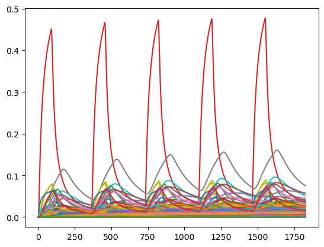

Analysis Project Demonstration
Import data from Spreadsheet Template, convert data from the spreedsheet into a YML, and run pycap
This demonstration starts with a spreadsheet template, reads it in, populates a nested dictionary, writes a yml file that the AnalysisProject class can read in, then executes the AnalysisProject functionality.
This notebook doesn’t explain all functionality in the AnalysisProject class, but rather shows this example of how multiple Well objects and responses can be combined into a more comprehensive project representing all wells and responses in an area.
Libraries you will need to run this script
[1]:
import yaml
import pandas as pd
from pathlib import Path
Path to your .xlsx template spreadsheet
Also provide a name for the PyCap run
[2]:
pycap_inputs_excel = "./test_run.xlsx"
pycap_run_name = "TestExample"
Convert the Excel tabs into dataframes
[3]:
raw_global = pd.read_excel(pycap_inputs_excel, sheet_name="Global_Inputs")
raw_hcw = pd.read_excel(pycap_inputs_excel, sheet_name="HCW_Inputs")
raw_dd = pd.read_excel(pycap_inputs_excel, sheet_name="Drawdown_Inputs")
raw_depl = pd.read_excel(pycap_inputs_excel, sheet_name="Depletion_Inputs")
Data wrangling to get Excel information readable in Python
[4]:
raw_hcw["HCW"] = raw_hcw["HCW"].astype(str)
raw_dd["HCW"] = raw_dd["HCW"].astype(str)
raw_depl["HCW"] = raw_depl["HCW"].astype(str)
raw_dd["pycap_resource_name"] = raw_dd["Resource_Name"]
raw_depl["pycap_resource_name"] = raw_depl["Resource_Name"]
raw_dd["Resource_Name"] = [i.replace(" ", "") for i in raw_dd["Resource_Name"]]
raw_dd["pycap_resource_name"] = [
":".join((rn, hcw)) for rn, hcw in zip(raw_dd["Resource_Name"], raw_dd["HCW"])
]
raw_depl["Resource_Name"] = [i.replace(" ", "") for i in raw_depl["Resource_Name"]]
raw_depl["pycap_resource_name"] = [
":".join((rn, hcw)) for rn, hcw in zip(raw_depl["Resource_Name"], raw_depl["HCW"])
]
Create nested dictionaries of inputs for YML
Project data, with default data for T, S, t, etc
[5]:
project_dict = dict()
project_dict["project_properties"] = {
"name": pycap_run_name,
"T": float(raw_global["Transmissivity_ft2d"][0]),
"S": float(raw_global["Storage_Coeff"][0]),
"default_dd_days": float(raw_global["Default_dd_days"][0]),
"default_depletion_years": float(raw_global["Default_depletion_years"].values[0]),
"default_pumping_days": float(raw_global["Default_pumping_days"].values[0]),
}
Well data, with apportionment, and name of location impacts will be assessed
[6]:
raw_depl
[6]:
| Resource_Type | Resource_Name | Resource_Lat | Resource_Long | Fraction_Intercept | HCW | Comments | pycap_resource_name | |
|---|---|---|---|---|---|---|---|---|
| 0 | Stream | TomorrowRiver | 44.623796 | 89.403412 | 0.705013 | 14 | NaN | TomorrowRiver:14 |
| 1 | Stream | TomorrowRiver | 44.623796 | 89.403412 | 0.816983 | 137 | NaN | TomorrowRiver:137 |
| 2 | Stream | TomorrowRiver | 44.623796 | 89.403412 | 0.738771 | 58 | NaN | TomorrowRiver:58 |
| 3 | Stream | TomorrowRiver | 44.623796 | 89.403412 | 0.699034 | 98 | NaN | TomorrowRiver:98 |
| 4 | Stream | TomorrowRiver | 44.623796 | 89.403412 | 0.670640 | 142 | NaN | TomorrowRiver:142 |
| ... | ... | ... | ... | ... | ... | ... | ... | ... |
| 199 | Stream | TomorrowRiver | 44.376763 | 89.235707 | 0.640469 | 117 | NaN | TomorrowRiver:117 |
| 200 | Stream | TomorrowRiver | 44.376763 | 89.235707 | 0.460920 | 54 | NaN | TomorrowRiver:54 |
| 201 | Stream | TomorrowRiver | 44.382820 | 89.228899 | 0.486513 | 62 | NaN | TomorrowRiver:62 |
| 202 | Stream | TomorrowRiver | 44.382824 | 89.226047 | 0.822763 | 27 | NaN | TomorrowRiver:27 |
| 203 | Stream | TomorrowRiver | 44.382739 | 89.225661 | 0.643367 | 133 | NaN | TomorrowRiver:133 |
204 rows × 8 columns
[7]:
stream_dict = {
i: {
"HCW": hcw,
"stream_apportionment": {
"name": pycap_resource_name,
"apportionment": float(frac_intercept),
},
}
for i, hcw, pycap_resource_name, frac_intercept in zip(
range(len(raw_depl)),
raw_depl["HCW"],
raw_depl["pycap_resource_name"],
raw_depl["Fraction_Intercept"],
)
}
[8]:
well_dict = {
i: {
"name": hcw,
"status": well_stat.lower(),
"loc": {
"x": float(well_long),
"y": float(well_lat),
},
"Q": float(Q_gpm),
"pumping_days": int(pump_days),
}
for i, hcw, well_stat, well_long, well_lat, Q_gpm, pump_days in zip(
range(len(raw_hcw)),
raw_hcw["HCW"],
raw_hcw["Well_Status"],
raw_hcw["Well_Long"],
raw_hcw["Well_Lat"],
raw_hcw["Q_gpm"],
raw_hcw["Pumping_Days"],
)
}
[9]:
stream_dict_df = pd.DataFrame.from_dict(stream_dict, orient="index")
stream_dict_df = stream_dict_df.rename("stream_apportionment{}".format)
[10]:
# rekey the well_dict dictionary using the names
well_dict = {i["name"]: i for _, i in well_dict.items()}
[11]:
if len(raw_depl["HCW"]) > 0:
# bring in the stream apportionment values
for j in well_dict:
well_dict[j].update(
stream_dict_df.loc[stream_dict_df["HCW"] == j]["stream_apportionment"]
)
# bring in the stream and drawdown response information
for j in well_dict:
well_dict[j].update(
{
"stream_response": (
list(raw_depl.loc[raw_depl["HCW"] == j]["pycap_resource_name"])
)
}
)
well_dict[j].update(
{"dd_response": (list(raw_dd.loc[raw_dd["HCW"] == j]["Resource_Name"]))}
)
# rename the keys again
well_dict = {f"well_{k}": v for k, v in well_dict.items()}
Stream Response Locations
[12]:
streamresp_dict = {
f"stream_response{i}": {
"name": pycap_resource_name,
"loc": {
"x": float(res_long),
"y": float(res_lat),
},
}
for i, pycap_resource_name, res_long, res_lat in zip(
range(len(raw_depl)),
raw_depl["pycap_resource_name"],
raw_depl["Resource_Long"],
raw_depl["Resource_Lat"],
)
}
Drawdown Response Locations
[13]:
raw_dd_unique = raw_dd.drop_duplicates(subset=["Resource_Name"]).reset_index()
ddresp_dict = {
f"dd_response{i}": {
"name": ResName,
"loc": {
"x": float(res_long),
"y": float(res_lat),
},
}
for i, ResName, res_long, res_lat in zip(
range(len(raw_dd_unique)),
raw_dd_unique["Resource_Name"],
raw_dd_unique["Resource_Long"],
raw_dd_unique["Resource_Lat"],
)
}
[14]:
combdict = {**project_dict, **well_dict, **ddresp_dict, **streamresp_dict}
yml_name = pycap_run_name + ".yml"
with open(yml_name, "w") as file:
documents = yaml.dump(combdict, file, default_flow_style=False, sort_keys=False)
Run pycap with existing YML file
Libraries you’ll need to run this script
[15]:
import sys
sys.path.insert(1, "../../")
from pycap.analysis_project import Project
Path to the folder and the name of the .yml file you’ve created.
[16]:
datapath = Path("")
yml_file = "TestExample.yml"
Call pycap.analysis_project to run Python tool
[17]:
ap = Project(datapath / yml_file)
ap.report_responses()
ap.write_responses_csv()
Writing report to TestExample.yml.import_report
Successfully parsed TestExample.yml (high five!)
*************************
Summary follows:
WELLS:
203 existing wells:
1
2
4
5
6
7
8
9
10
11
12
13
14
15
16
17
18
19
20
21
22
23
24
25
26
27
28
29
30
31
32
33
34
35
36
37
38
39
40
41
42
43
44
45
46
47
48
49
50
51
52
53
54
55
56
57
58
59
60
61
62
63
64
65
66
67
68
69
70
71
72
73
74
75
76
77
78
79
80
81
82
83
84
85
86
87
88
89
90
91
92
93
94
95
96
97
98
99
100
101
102
103
104
105
106
107
108
109
110
111
112
113
114
115
116
117
118
119
120
121
122
123
124
125
126
127
128
129
130
131
132
133
134
135
136
137
138
139
140
141
142
143
144
145
146
147
148
149
150
151
152
153
154
155
156
157
158
159
160
161
162
163
164
165
166
167
168
169
170
171
172
173
174
175
176
177
178
179
180
181
182
183
184
185
186
187
188
189
190
191
192
193
194
195
196
197
198
199
200
201
202
203
204
1 pending wells:
3
STREAM RESPONSES:
TomorrowRiver:14
TomorrowRiver:137
TomorrowRiver:58
TomorrowRiver:98
TomorrowRiver:142
TomorrowRiver:161
TomorrowRiver:107
TomorrowRiver:143
TomorrowRiver:148
TomorrowRiver:35
TomorrowRiver:113
TomorrowRiver:171
TomorrowRiver:37
TomorrowRiver:131
TomorrowRiver:115
TomorrowRiver:56
TomorrowRiver:99
TomorrowRiver:179
TomorrowRiver:31
TomorrowRiver:53
TomorrowRiver:109
TomorrowRiver:24
TomorrowRiver:111
TomorrowRiver:112
TomorrowRiver:71
TomorrowRiver:74
TomorrowRiver:28
TomorrowRiver:94
TomorrowRiver:49
TomorrowRiver:66
TomorrowRiver:110
TomorrowRiver:47
TomorrowRiver:120
TomorrowRiver:55
TomorrowRiver:45
TomorrowRiver:51
TomorrowRiver:104
TomorrowRiver:87
TomorrowRiver:178
TomorrowRiver:61
TomorrowRiver:128
TomorrowRiver:59
TomorrowRiver:88
TomorrowRiver:4
TomorrowRiver:180
TomorrowRiver:157
TomorrowRiver:36
TomorrowRiver:29
TomorrowRiver:114
TomorrowRiver:10
TomorrowRiver:105
TomorrowRiver:13
TomorrowRiver:127
TomorrowRiver:141
TomorrowRiver:95
TomorrowRiver:181
TomorrowRiver:182
TomorrowRiver:186
TomorrowRiver:26
TomorrowRiver:106
TomorrowRiver:119
TomorrowRiver:97
TomorrowRiver:73
TomorrowRiver:41
TomorrowRiver:132
TomorrowRiver:83
TomorrowRiver:177
TomorrowRiver:204
TomorrowRiver:169
TomorrowRiver:8
TomorrowRiver:102
TomorrowRiver:168
TomorrowRiver:165
TomorrowRiver:86
TomorrowRiver:22
TomorrowRiver:89
TomorrowRiver:82
TomorrowRiver:12
TomorrowRiver:20
TomorrowRiver:125
TomorrowRiver:170
TomorrowRiver:166
TomorrowRiver:5
TomorrowRiver:160
TomorrowRiver:194
TomorrowRiver:195
TomorrowRiver:135
TomorrowRiver:193
TomorrowRiver:129
TomorrowRiver:123
TomorrowRiver:197
TomorrowRiver:164
TomorrowRiver:147
TomorrowRiver:57
TomorrowRiver:159
TomorrowRiver:126
TomorrowRiver:184
TomorrowRiver:116
TomorrowRiver:163
TomorrowRiver:185
TomorrowRiver:152
TomorrowRiver:155
TomorrowRiver:191
TomorrowRiver:175
TomorrowRiver:176
TomorrowRiver:60
TomorrowRiver:187
TomorrowRiver:124
TomorrowRiver:17
TomorrowRiver:70
TomorrowRiver:91
TomorrowRiver:145
TomorrowRiver:150
TomorrowRiver:76
TomorrowRiver:43
TomorrowRiver:19
TomorrowRiver:25
TomorrowRiver:68
TomorrowRiver:153
TomorrowRiver:103
TomorrowRiver:172
TomorrowRiver:101
TomorrowRiver:92
TomorrowRiver:146
TomorrowRiver:64
TomorrowRiver:72
TomorrowRiver:158
TomorrowRiver:85
TomorrowRiver:100
TomorrowRiver:196
TomorrowRiver:39
TomorrowRiver:118
TomorrowRiver:90
TomorrowRiver:136
TomorrowRiver:149
TomorrowRiver:7
TomorrowRiver:144
TomorrowRiver:40
TomorrowRiver:6
TomorrowRiver:50
TomorrowRiver:190
TomorrowRiver:189
TomorrowRiver:80
TomorrowRiver:202
TomorrowRiver:201
TomorrowRiver:203
TomorrowRiver:174
TomorrowRiver:48
TomorrowRiver:167
TomorrowRiver:188
TomorrowRiver:108
TomorrowRiver:130
TomorrowRiver:65
TomorrowRiver:138
TomorrowRiver:151
TomorrowRiver:44
TomorrowRiver:77
TomorrowRiver:23
TomorrowRiver:1
TomorrowRiver:3
TomorrowRiver:121
TomorrowRiver:16
TomorrowRiver:173
TomorrowRiver:46
TomorrowRiver:30
TomorrowRiver:75
TomorrowRiver:21
TomorrowRiver:67
TomorrowRiver:2
TomorrowRiver:199
TomorrowRiver:200
TomorrowRiver:198
TomorrowRiver:134
TomorrowRiver:139
TomorrowRiver:84
TomorrowRiver:78
TomorrowRiver:162
TomorrowRiver:154
TomorrowRiver:156
TomorrowRiver:96
TomorrowRiver:63
TomorrowRiver:33
TomorrowRiver:15
TomorrowRiver:42
TomorrowRiver:32
TomorrowRiver:192
TomorrowRiver:93
TomorrowRiver:34
TomorrowRiver:9
TomorrowRiver:11
TomorrowRiver:183
TomorrowRiver:18
TomorrowRiver:79
TomorrowRiver:38
TomorrowRiver:81
TomorrowRiver:140
TomorrowRiver:122
TomorrowRiver:69
TomorrowRiver:52
TomorrowRiver:117
TomorrowRiver:54
TomorrowRiver:62
TomorrowRiver:27
TomorrowRiver:133
DRAWDOWN RESPONSES:
LakeEmily
Now Let’s have a look at the main results files
First, the summary base depletion
[18]:
# first the summary, base depletion
depl = pd.read_csv(
"output/TestExample.table_report.base_stream_depletion.csv", index_col=0
)
depl
[18]:
| TomorrowRiver | |
|---|---|
| 3 | 0.072980 |
| 1 | 0.009860 |
| 2 | 0.008878 |
| 4 | 0.042601 |
| 5 | 0.477394 |
| ... | ... |
| 203 | 0.000000 |
| 204 | 0.000000 |
| total_proposed | 0.072980 |
| total_existing | 2.974664 |
| total_combined | 3.045433 |
207 rows × 1 columns
Combined report of all depletion and drawdown calculations
[19]:
tab_report = pd.read_csv("output/TestExample.table_report.csv", index_col=0)
tab_report
[19]:
| LakeEmily:dd (ft) | TomorrowRiver:1:depl (cfs) | TomorrowRiver:2:depl (cfs) | TomorrowRiver:4:depl (cfs) | TomorrowRiver:5:depl (cfs) | TomorrowRiver:6:depl (cfs) | TomorrowRiver:7:depl (cfs) | TomorrowRiver:8:depl (cfs) | TomorrowRiver:9:depl (cfs) | TomorrowRiver:10:depl (cfs) | ... | TomorrowRiver:196:depl (cfs) | TomorrowRiver:197:depl (cfs) | TomorrowRiver:198:depl (cfs) | TomorrowRiver:199:depl (cfs) | TomorrowRiver:200:depl (cfs) | TomorrowRiver:201:depl (cfs) | TomorrowRiver:202:depl (cfs) | TomorrowRiver:203:depl (cfs) | TomorrowRiver:204:depl (cfs) | TomorrowRiver:3:depl (cfs) | |
|---|---|---|---|---|---|---|---|---|---|---|---|---|---|---|---|---|---|---|---|---|---|
| 3: proposed | NaN | NaN | NaN | NaN | NaN | NaN | NaN | NaN | NaN | NaN | ... | NaN | NaN | NaN | NaN | NaN | NaN | NaN | NaN | NaN | 0.07298 |
| 1: existing | 0.000048 | 0.00986 | NaN | NaN | NaN | NaN | NaN | NaN | NaN | NaN | ... | NaN | NaN | NaN | NaN | NaN | NaN | NaN | NaN | NaN | NaN |
| 2: existing | NaN | NaN | 0.008878 | NaN | NaN | NaN | NaN | NaN | NaN | NaN | ... | NaN | NaN | NaN | NaN | NaN | NaN | NaN | NaN | NaN | NaN |
| 4: existing | NaN | NaN | NaN | 0.042601 | NaN | NaN | NaN | NaN | NaN | NaN | ... | NaN | NaN | NaN | NaN | NaN | NaN | NaN | NaN | NaN | NaN |
| 5: existing | NaN | NaN | NaN | NaN | 0.477394 | NaN | NaN | NaN | NaN | NaN | ... | NaN | NaN | NaN | NaN | NaN | NaN | NaN | NaN | NaN | NaN |
| ... | ... | ... | ... | ... | ... | ... | ... | ... | ... | ... | ... | ... | ... | ... | ... | ... | ... | ... | ... | ... | ... |
| 203: existing | NaN | NaN | NaN | NaN | NaN | NaN | NaN | NaN | NaN | NaN | ... | NaN | NaN | NaN | NaN | NaN | NaN | NaN | 0.0 | NaN | NaN |
| 204: existing | NaN | NaN | NaN | NaN | NaN | NaN | NaN | NaN | NaN | NaN | ... | NaN | NaN | NaN | NaN | NaN | NaN | NaN | NaN | 0.0 | NaN |
| total_proposed | NaN | NaN | NaN | NaN | NaN | NaN | NaN | NaN | NaN | NaN | ... | NaN | NaN | NaN | NaN | NaN | NaN | NaN | NaN | NaN | 0.07298 |
| total_existing | 0.000048 | 0.00986 | 0.008878 | 0.042601 | 0.477394 | 0.038422 | 0.049016 | 0.022823 | 0.160571 | 0.035432 | ... | 0.0 | 0.0 | 0.0 | 0.0 | 0.0 | 0.0 | 0.0 | 0.0 | 0.0 | NaN |
| total_combined | 0.000048 | 0.00986 | 0.008878 | 0.042601 | 0.477394 | 0.038422 | 0.049016 | 0.022823 | 0.160571 | 0.035432 | ... | 0.0 | 0.0 | 0.0 | 0.0 | 0.0 | 0.0 | 0.0 | 0.0 | 0.0 | 0.07298 |
207 rows × 205 columns
All the depletion time series are included in a single time series
[20]:
all_time_series = pd.read_csv("output/TestExample.table_report.all_ts.csv", index_col=0)
all_time_series.plot(legend=None)
[20]:
<Axes: >

[ ]: